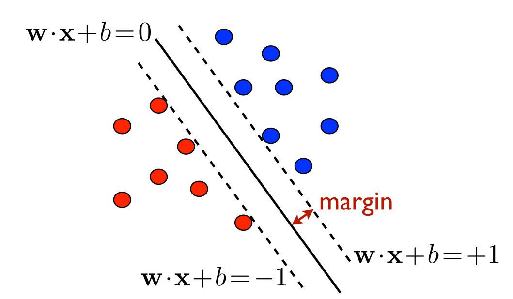

compute_c = function (points) {
return points.y1 - compute_m(points) * points.x1;
}
compute_m = function (points) {
return (points.y1 - points.y2) / (points.x1 - points.x2);
}
update = function (svg, X, Y, zrange, strech, sep) {
const xdomain = X.domain();
const ydomain = Y.domain();
const m = compute_m(pivots);
const c = compute_c(pivots);
svg
.select("#line")
.attr("stroke", sep ? "black" : "lightgray")
.attr(
"x1",
m * xdomain[0] + c >= ydomain[0] ? X(xdomain[0]) : X((ydomain[0] - c) / m)
)
.attr(
"y1",
m * xdomain[0] + c >= ydomain[0] ? Y(m * xdomain[0] + c) : Y(ydomain[0])
)
.attr(
"x2",
m * xdomain[1] + c >= ydomain[0] ? X(xdomain[1]) : X((ydomain[0] - c) / m)
)
.attr(
"y2",
m * xdomain[1] + c >= ydomain[0] ? Y(m * xdomain[1] + c) : Y(ydomain[0])
);
svg
.select("#R1")
.attr(
"points",
[
[X(xdomain[0]), Y(m * xdomain[0] + c)],
[X(xdomain[1]), Y(m * xdomain[1] + c)],
[X(xdomain[1]), Y(m * xdomain[1] + c + strech)],
[X(xdomain[0]), Y(m * xdomain[0] + c + strech)]
].join(",")
)
.style("fill", zrange[0])
.style("opacity", 0.1);
svg
.select("#R2")
.attr(
"points",
[
[X(xdomain[0]), Y(m * xdomain[0] + c)],
[X(xdomain[1]), Y(m * xdomain[1] + c)],
[X(xdomain[1]), Y(m * xdomain[1] + c - strech)],
[X(xdomain[0]), Y(m * xdomain[0] + c - strech)]
].join(",")
)
.style("fill", zrange[1])
.style("opacity", 0.1);
svg
.select("#M1")
.attr(
"points",
[
[X(xdomain[0]), Y(m * xdomain[0] + c)],
[X(xdomain[1]), Y(m * xdomain[1] + c)],
[X(xdomain[1]), Y(m * xdomain[1] + c + margin * Math.sqrt(1 + m * m))],
[X(xdomain[0]), Y(m * xdomain[0] + c + margin * Math.sqrt(1 + m * m))]
].join(",")
)
.style("fill", zrange[0])
.style("opacity", 0.3);
svg
.select("#M2")
.attr(
"points",
[
[X(xdomain[0]), Y(m * xdomain[0] + c)],
[X(xdomain[1]), Y(m * xdomain[1] + c)],
[X(xdomain[1]), Y(m * xdomain[1] + c - margin * Math.sqrt(1 + m * m))],
[X(xdomain[0]), Y(m * xdomain[0] + c - margin * Math.sqrt(1 + m * m))]
].join(",")
)
.style("fill", zrange[1])
.style("opacity", 0.3);
}
separates = function (data, x, y, z) {
const m = compute_m(pivots);
const c = compute_c(pivots);
if (data[0][y] > m * data[0][x] + c)
return data.every(
(d) =>
(d[z] == data[0][z] && d[y] > m * d[x] + c) ||
(d[z] != data[0][z] && d[y] < m * d[x] + c)
);
else if (data[0][y] < m * data[0][x] + c)
return data.every(
(d) =>
(d[z] == data[0][z] && d[y] < m * d[x] + c) ||
(d[z] != data[0][z] && d[y] > m * d[x] + c)
);
else return false;
}
draw = function (data, args = {}) {
// Declare the chart dimensions and margins.
const width = args.width || 500;
const height = args.width || 400;
const marginTop = args.marginTop || 5;
const marginRight = args.marginRight || 20;
const marginBottom = args.marginBottom || 50;
const marginLeft = args.marginLeft || 40;
const x = args.x || "x";
const y = args.y || "y";
const z = args.z || "z";
const xdomain = args.xdomain || [0, d3.max(data, (d) => d[x])];
const ydomain = args.ydomain || [0, d3.max(data, (d) => d[y])];
const zdomain = args.zdomain || [0, 1];
const zrange = args.zrange || ["red", "blue"];
const m = compute_m(pivots);
const c = compute_c(pivots);
// Declare the x (horizontal position) scale.
const X = d3
.scaleLinear()
.domain(xdomain)
.range([marginLeft, width - marginRight]);
// Declare the y (vertical position) scale.
const Y = d3
.scaleLinear()
.domain(ydomain)
.range([height - marginBottom, marginTop]);
// Declare the fill axis
const Z = d3.scaleOrdinal().domain(zdomain).range(zrange);
// Create the SVG container.
const svg = d3.create("svg").attr("width", width).attr("height", height);
// Add the x-axis.
svg
.append("g")
.attr("transform", `translate(0,${height - marginBottom})`)
.call(d3.axisBottom(X));
svg.append("text")
.attr("text-anchor", "end")
.attr("x", width - 50)
.attr("y", height - 20 )
.text("age (x1) →");
svg.append("text")
.attr("text-anchor", "end")
.attr("transform", "rotate(-90)")
.attr("y", 13)
.attr("x", -20)
.text("education (x2) →")
// Add the y-axis.
svg
.append("g")
.attr("transform", `translate(${marginLeft},0)`)
.call(d3.axisLeft(Y));
const regions = svg.append("g").attr("id", "regions");
regions.append("polygon").attr("id", "R1");
regions.append("polygon").attr("id", "R2");
// Add the dots
svg
.append("g")
.selectAll("dot")
.data(data)
.enter()
.append("circle")
.attr("cx", (d) => X(d[x]))
.attr("cy", (d) => Y(d[y]))
.attr("r", 3)
.style("fill", (d) => Z(d[z]));
// Show Margins
svg.append("g").attr("id", "margins");
regions.append("polygon").attr("id", "M1");
regions.append("polygon").attr("id", "M2");
// Add the line
const line = svg.append("g");
line
.append("line")
.attr("id", "line")
.attr("stroke-width", 3)
.attr("path-length", 10);
update(svg, X, Y, zrange, Math.max(width, height), separates(data, x, y, z));
// Draw the pivot points
line
.append("circle")
.attr("cx", X(pivots.x1))
.attr("cy", Y(pivots.y1))
.attr("r", 7)
.style("fill", "white")
.style("stroke", "lightgrey")
.style("stroke-width", 3)
.call(
d3.drag().on("drag", function (event, d) {
pivots.x1 = X.invert(event.x);
pivots.y1 = Y.invert(event.y);
d3.select(this).attr("cx", X(pivots.x1)).attr("cy", Y(pivots.y1));
update(
svg,
X,
Y,
zrange,
Math.max(width, height),
separates(data, x, y, z)
);
})
);
line
.append("circle")
.attr("cx", X(pivots.x2))
.attr("cy", Y(pivots.y2))
.attr("r", 7)
.style("fill", "white")
.style("stroke", "lightgrey")
.style("stroke-width", 3)
.call(
d3.drag().on("drag", function (event, d) {
pivots.x2 = X.invert(event.x);
pivots.y2 = Y.invert(event.y);
d3.select(this).attr("cx", X(pivots.x2)).attr("cy", Y(pivots.y2));
update(
svg,
X,
Y,
zrange,
Math.max(width, height),
separates(data, x, y, z)
);
})
);
// Draw regions
if (showRegions) {
regions.attr("visibility", "visible");
regions.attr("visibility", "visible");
} else {
regions.attr("visibility", "hidden");
regions.attr("visibility", "hidden");
}
// Draw line
if (showLine) {
line.attr("visibility", "visible");
line.attr("visibility", "visible");
} else {
line.attr("visibility", "hidden");
line.attr("visibility", "hidden");
}
// Return the SVG element.
return svg.node();
}
generateData = function (xmin = -1, xmax = 1, ymin = -1, ymax = 1, n = 10, method = "linear") {
const randX = d3.randomUniform(xmin, xmax);
const randY = d3.randomUniform(ymin, ymax);
const pivots = {
x1: randX(),
x2: randX(),
y1: randY(),
y2: randY()
};
const a = d3.randomUniform(0, 20)();
const b = d3.randomUniform(0, 10)();
return d3.range(n).map((d) => {
const x = randX();
const y = randY();
let z;
if (method == "linear")
z = y - compute_m(pivots) * x - compute_c(pivots) > 0 ? 0 : 1;
else if (method == "quad") {
z = (x - 50) * (x - 50) / (a * a) + (y - 8) * (y - 8) / (b * b) - 1 > 0 ? 0 : 1;
}
return {
x: x,
y: y,
z: z
};
});
}3 Support Vector Machines
“A computer would deserve to be called intelligent if it could deceive a human into believing that it was human”
– Alan Turing
Learning Objectives
Introduction to SVM
Motivating Toy Example
Separating Hyperplanes
Hard-margin separation / Maximum-Margin
Soft-margin separation / Linear SVM
Kernel method for SVMs
Application to Digit Classification
Prerequisites
Must-have:
Enthusiasm about ML
Basics of matrix operations
- Linear Algebra
- My summer course on Linear Algebra and Convex Optimization
Python (pandas, numpy, scikit-learn)
- DATS-6103
Recommended:
Cormen, Thomas H., Charles E. Leiserson, Ronald L. Rivest, and Clifford Stein. 2009. Introduction to Algorithms, Third Edition. 3rd ed. The MIT Press.
3.1 Introduction
As always, we ask the following questions as we encounter a new learning algorithm:
- Classification or regression?
- Classification—default is binary
- Supervised or unsupervised?
- Supervised—training data are labeled
- Parametric or non-parametric?
- Parametric—it assumes a hypothesis class, namely hyperplanes
3.2 A Motivating Example
Let us ask the curious question: can we learn to predict party affiliation of a US national from their age and years of education?
Number of features: n=2.
Feature space: \mathcal{X} is a subset of \mathbb{R}^2.
Target space: \mathcal{Y}={
RED,BLUE}.
In the demo, we are trying to:
separate the separate our training labelled examples by a line (more generally a hyperplane).
once we have learned a separating hyperplane, an unseen test point can be classified based on which side of the hyperplane the point is.
Summary
In summary, the SVM tries to learn from a sample a linear decision boundary that fully separates the training data—when possible.
Pros
- Very intuitive
- Efficient algorithms are available
- Linear Programming Problem
- Perceptron (Rosenblatt 1958)
- Easily generalized to a higher-dimensional feature space
- decision boundary: line (n=2), plane (n=3), hyperplane (n\geq3)
Rosenblatt, F. 1958. “The perceptron: A probabilistic model for information storage and organization in the brain.” Psychological Review 65 (6): 386–408. https://doi.org/10.1037/h0042519.
Cons
- There are infinitely many separating hyperplanes
- maximum-margin
- The data may not be always linearly separable
- soft-margin
- Kernel methods
3.3 Separable Case (Hard-Margin)
Mathematical Formulation
Training Sample: S=\{(\pmb{x_1},y_1),\ldots,(\pmb{x_m},y_m)\}
each \pmb{x_i} is an n\times 1 feature vector
size m
I.I.D.
\pmb{x}=(x_1,\ldots,x_n) is a vector in \mathbb{R}^n
y\in\{-1, +1\}
Objective: Look for a hyperplane \pmb{w}\cdot\pmb{x}+b=0 with the normal vector \pmb{w} such that
all sample points are on the correct side of the hyperplane, i.e., y_i(\pmb{\pmb{w}\cdot\pmb{x_i}}+b)\geq0\text{ for all }i\in[m]
the margin (distance to the closed sample point) \rho=\min_{i\in[m]}\frac{|\pmb{w}\cdot\pmb{x_i}+b|}{\|\pmb{w}\|} is maximum

The Solution
The good news is a unique solution hyperplane exists—so long as the sample points are linearly separable.
In that case, the solution \pmb{w}^* is a linear combination of the training set vectors: \pmb{w^*}=\alpha_1\pmb{x_1}+\ldots+\alpha_m\pmb{x_m}. If the i-th training vector appears in the above linear combination (i.e., \alpha_i\neq0), then it’s called a support vector. Moreover, for any such support vector: b^*=y_i-\sum_{j=1}^m\alpha_j y_j (\pmb{x}_j\cdot\pmb{x_i}).
For a test data point with feature vector \pmb{x}, we classify using the following rule: \pmb{x}\mapsto\text{sign}(\pmb{w^*}\cdot\pmb{x}+b^*) =\text{sgn}\left(\sum_{i=1}^m\alpha_iy_i\langle\pmb{x_i},\pmb{x}\rangle+b^*\right).
Solving the Optimization Problem
The primal problem is to find a hyperplane (given by the normal vector \pmb{w}\in\mathbb{R}^n and b\in\mathbb{R}) so that \min_{\pmb{w},b}\frac{1}{2}\|\pmb{w}\|^2 subject to: y_i(\pmb{w}\cdot\pmb{x_i}+b)\geq1\text{ for all }i\in[m] This is a convex optimization problem with a unique solution.
However, in order to get the optimal solution, we consider the dual problem. For more details Mohri, Rostamizadeh, and Talwalkar (2018).
Tip
3.4 Non-Separable Case (Soft-Margin)
In real applications, the sample points are not separable. In that case, we allow for exceptions.
We would not mind a few exceptional sample points lying inside the maximum margin or even on the wrong side of the margin. However, the less number of exceptions, the better.
We toss a hyper-parameter C\geq0 (known as the regularization parameter) in to our optimization.
Solving with Slack Variables
The primal problem is to find a hyperplane (given by the normal vector \pmb{w}\in\mathbb{R}^n and b\in\mathbb{R}) so that \min_{\pmb{w},b,\pmb{\xi}}\frac{1}{2}\|\pmb{w}\|^2 + C\sum_{i=1}^m\xi^2_i subject to: y_i(\pmb{w}\cdot\pmb{x_i}+b)\geq1-\xi_i\text{ for all }i\in[m] Here, the \pmb{\xi}=(\xi_1,\ldots,\xi_m) is called the slack.
This is a also convex optimization problem with a unique solution.
However, in order to get the optimal solution, we consider the dual problem. For more details (Mohri, Rostamizadeh, and Talwalkar 2018, chap. 5).
Mohri, Mehryar, Afshin Rostamizadeh, and Ameet Talwalkar. 2018. Foundations of Machine Learning. 2nd ed. The MIT Press.
Consequently the objective of the optimization becomes two-fold:
maximize the margin
limit the total amount of slack.
About the C
The regularization parameter C controls the width of the margin. The smaller C gets, the wider the margin becomes.
Some of the common choices are 0.001, 0.01, 0.1, 1.0, 100, etc.
Tip